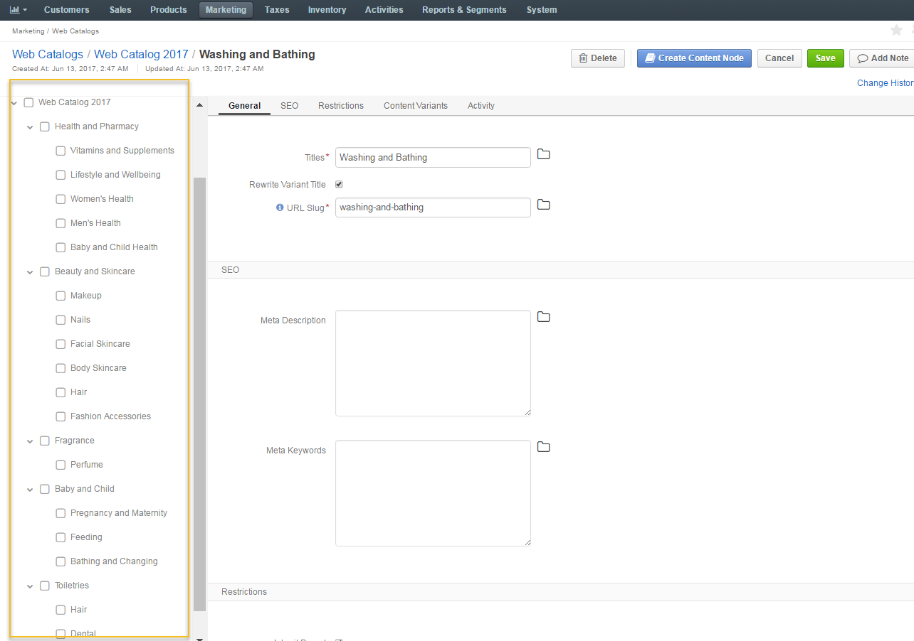
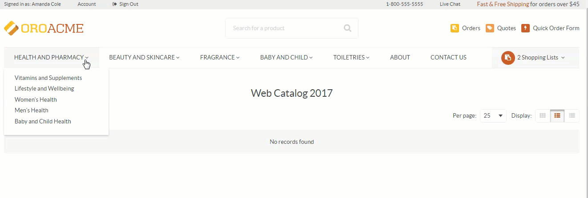

Enable a Web Catalog Globally¶
To enable a web catalog globally:
- Navigate to System > Configuration > Websites > Routing.
- In the Web Catalog section, select the required web catalog that should be displayed on the front store.
Note
When a Web Catalog is selected, it populates the main menu and sub-menus on the OroCommerce Front Store. If there is no Web Catalog in OroCommerce, the Master Catalog structure is mimicked.
Enable a Web Catalog for a Website¶
To enable a web catalog for a specific website:
- Navigate to System > Websites in the main menu.
- For the necessary website, hover over the more actions menu to the right of the necessary website and click to start editing the configuration.
- Select System Configuration > Websites > Routing in the menu to the left.
Customize Web Catalog Contents for Localization, Customer or Customer Group¶
To customize your web catalog contents visibility:
- Navigate to Marketing > Web Catalog in the main menu.
- For the necessary web catalog, hover over the more actions menu to the right and click to start editing the catalog content tree.
In the Restriction section, define the visibility of the web catalog.
By default, the web catalog is displayed for any localization, on any website, and for any customer.
To make OroCommerce apply a web catalog to the front store only for the particular combination of these facts, create a restriction by selecting all or some of the following: target localization, website, and customer or customer group.
Note
Only one field must be chosen for customers at a time, either a customer group and a customer.
Warning
Never leave the restrictions for non-default variant empty. This may cause unexpected priority collision between the default and non-default variant.
Build a Custom Web Catalog From Scratch (Sample)¶
For illustration purposes, a sample web catalog set up is provided below.
Create First Level Menu
A website that distributes beauty and skincare products to shops worldwide is to have the following sections in its main menu:
- Health and Pharmacy
- Beauty and Skincare
- Fragrance
- Baby and Child
- Toiletries
These sections will serve as the first level of the front store main menu. In the management console, they will be called the root nodes.
To set up root content nodes in the management console, we:
- Navigate to Marketing > Web Catalogs.
- Click Create Web Catalog
- Name the catalog Web Catalog 2017 and save it.
- Click Edit Content Tree.
- Name the first node Web Catalog 2017. Root nodes will be linked to it.
- Fill in the SEO section.
- Set the necessary restrictions.
- Add a landing page in the content variants section that would be linked to the menu.
- From this node, create the first level menu by clicking Create Content Node.
- Name it Health and Pharmacy.
- Fill in the SEO section.
- Set the necessary restrictions (or inherit parent restrictions).
- Add a landing page linked to Health and Pharmacy.
- Click Save.
This way, we create all the required first level menus.
Note
Make sure that you create first level nodes from Web Catalog 2017 in the nodes section on the left of the page.
Create Sub-level Menu
Once all fist level nodes have been created, we can create the sub-menu nodes (second level menus) that would populate root nodes.
Each of the main menu sections will have the following second level menus:
- Health and Pharmacy: Vitamins and Supplements, Lifestyle and Wellbeing, Women’s Health, Men’s Health, Baby and Child Health.
- Beauty and Skincare: Makeup, Nails, Facial Skincare, Body Skincare, Hair, Fashion Accessories.
- Fragrance: Perfume, Aftershave.
- Baby and Child: Pregnancy and Maternity, Feeding, Bathing and Changing.
- Toiletries: Hair, Dental, Washing and Bathing.
To set up content nodes in the management console:
- Select the root node you are creating the sub-node for. In our case, it is Health and Pharmacy.
- Click Create Content Node.
- Name the second level menu Vitamins and Supplements. This will be linked to the root node.
- Fill in the SEO section.
- Set the necessary restrictions (or inherit parent restrictions).
- Add a product collection to Vitamins and Supplements.
This way, we create all the required second level menus.
Each of such levels can be populated with more levels, or nodes, if necessary, and each node can have a page (system, landing, product), a product collection, or a category mapped into it.
Note
You can drag the existing content nodes to a different position within the content tree on the left of the page, as illustrated below:

Once the catalog is enabled (globally or per website), you will be able to see it on the front store.
